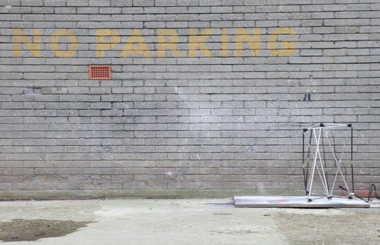

Enter the Writers
Golem
By Marloeke van der Vlugt

The students of the Interactive Architecture Lab have to present their research several times a year, to a group of critical peers. I was at the recent presentations and will discuss some of their work in the next few blogs.
As well as promoting ecological and sustainable thinking, the course expects the newly developed software to be made available open source software for wider public use. Juncheng Chen, Siyuan Jing and Lydia Zhou, three students from China, know how to integrate these three principles in a creative way in their project Golem. They began with the question: how can you move an architectural structure? And how can you develop a high-quality, multifunctional modus operandi?
The group studied the systems behind the Rolling Bridge from Heatherwick Studio and examined the projects developed by Hyperbody at the TU at Delft, where Lydia Zhou had studied for a while. However, these proved to be very complex, expensive and energy consuming constructions.
The Dutch artist Theo Jansen on the other hand creates very different structures. His animated beach animals are lightweight creations made from inexpensive PVC pipes. The skeletons are moved by “push muscles”. Here, the “muscle” stretches through the direction of the wind, which then initiates movement. Theo Jansen allows his creatures to evolve slowly. He develops his designs through a continuous building process which leads to better structures. He let the animals loose on the beach where they are exposed to wind and rain. The animals that don’t survive there - namely those that don’t move - are buried.
During the students’ presentation, someone in the audience asked a question: did they have ideas about a specific form, or application for their work? The room fell silent. The students had as yet no idea round how this design could influence the relationship between people and machines, or what desires or dreams could be realised by using these new tools.
For now, the students will let the public answer this question. The design should be brought onto the market, as an open source, modular toolkit. Multiple parties can then develop the various components and, in the process, discover new possibilities and applications. During Cinekid, Golem can be used as an open workshop, and children can work with the components.
I do wonder, what happens to such a nice idea if its development - and all responsibility - is placed wholly on the user. Will Golem be embraced by a wider audience, and then further developed by companies? Or will the idea die a quiet death because no one knows what the possibilities are? Will people actually discover new applications by simply playing around with a technology, or do we just create what we already know - again and again - in a “new” form? Should people determine the direction in which such technologies develop? Or should nature be used as the ultimate example?

xxxxxxx